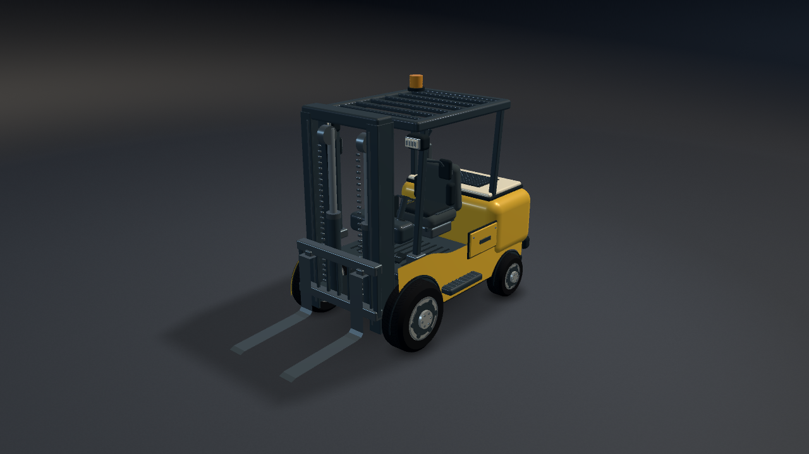
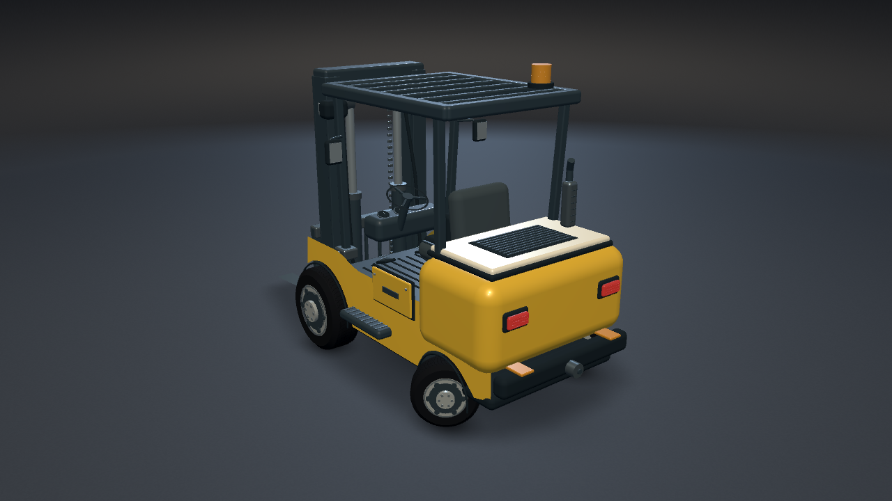
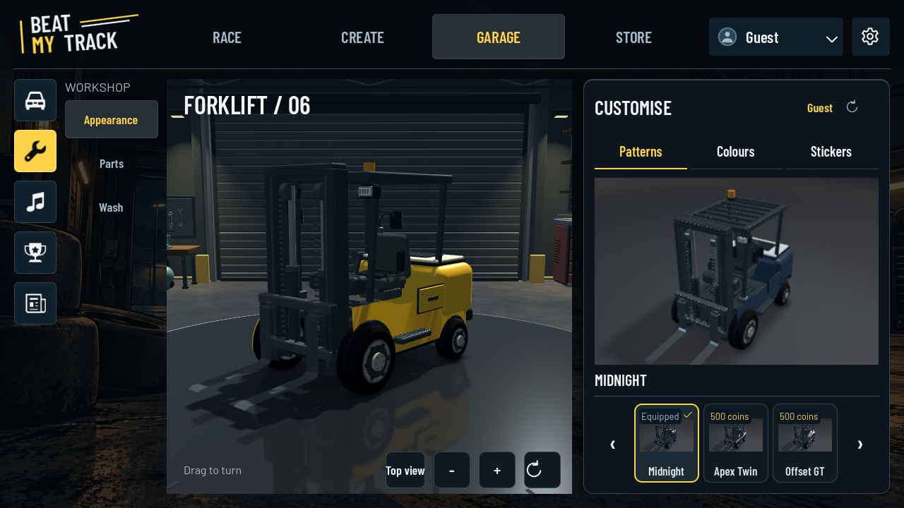
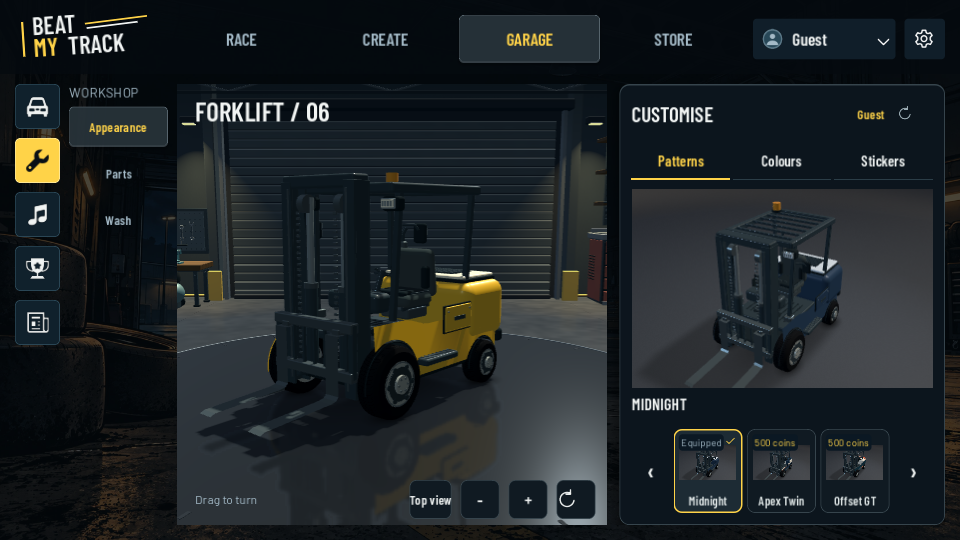
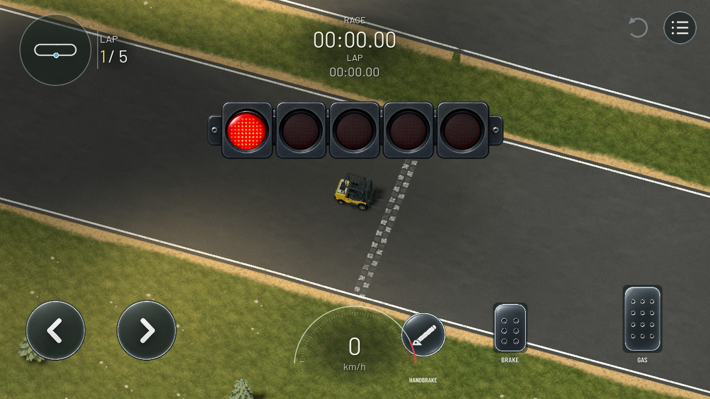
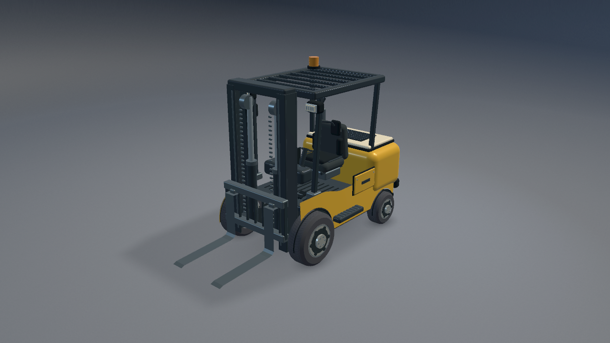
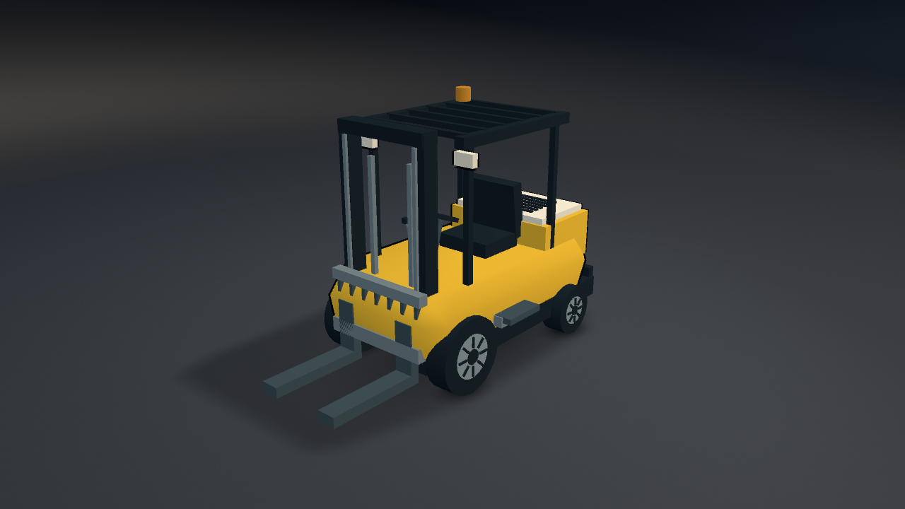

Original native model using Compact paint, alloy, rubber and tire shading. Rear wheels steer; fixed front wheels lead the turn and the tail swings outward. Physics and visual geometry use the same wheelbase and track width.
98 headless / 106 Compatibility / 106 desktop Mobile checks passed. Physical-phone appearance, driving feel and frame pacing remain for review. Full report.






